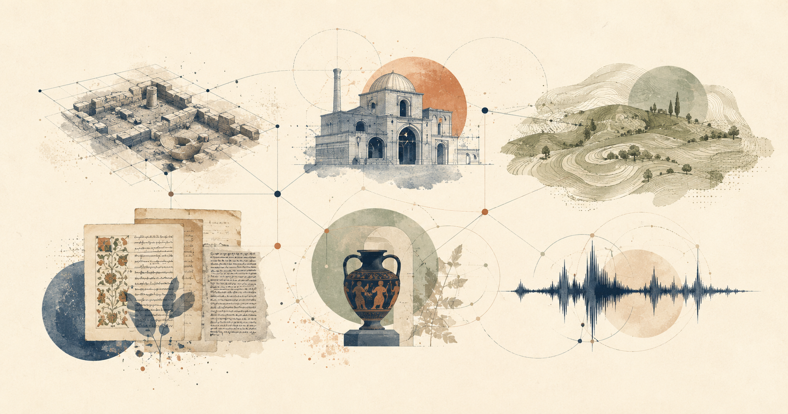

研究对象
面向跨类型文化遗产研究
包括文化景观与文化路线、考古遗产与遗址、建筑与历史环境、可移动文化遗产与馆藏、文献遗产，以及非物质文化遗产与社区实践。

CLKG · 研究者需求调研
请以近两年参与的一项真实文化遗产研究任务为例作答。我们关注多类型遗产及其文本、影像、GIS、表格与口述材料如何被组织、关联与追溯。
开始填写
点击下方按钮复制问卷口令；打开微信后粘贴发送，即可进入并填写问卷。
#小程序://问卷星/Uv3jBvh9JOWVGUA
研究对象
包括文化景观与文化路线、考古遗产与遗址、建筑与历史环境、可移动文化遗产与馆藏、文献遗产，以及非物质文化遗产与社区实践。
调研内容
问题涉及材料来源、数据模态、时空与实体关联、证据溯源、不确定性、协作审核，以及平台能力需求。
参与说明
请勿填写姓名、联系方式、精确脆弱遗址坐标、未授权档案内容或受限制的社区知识。结果仅以汇总形式分析与呈现。